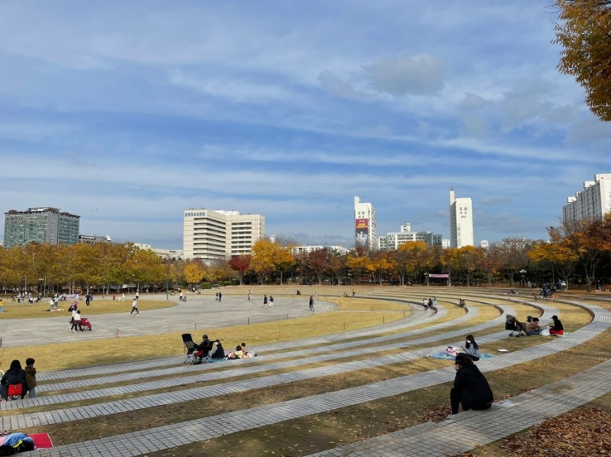

HTML5 학습
github
kosa
google
나의 소개
- 이름 : 최 정우
- 별명 : 정우 최
- 관심기술 : HTML5
- 취미 : 롤
올해 재미있게 읽은 책
| 제목 | 장르 |
|---|
| 이것이 자바다 | 컴퓨터 |
| 자바의 정석 | 컴퓨터 |
| 자바의 정석2 | 컴퓨터 |
자랑하고 싶은 우리동네의 아름다운 곳
평촌 중앙공원(평촌에 있는 대표적인 공원: 나무도 많고 사람도 많고 넓다. 친구와 가족과 함께 오기 좋다.)

평촌 중앙공원의 모습이다.
이 문서는 최 정우에 의해 HTML5와 CSS3 기술을 사용하여 2023 3월 30일에 작성하였습니다.(ver 1.0)